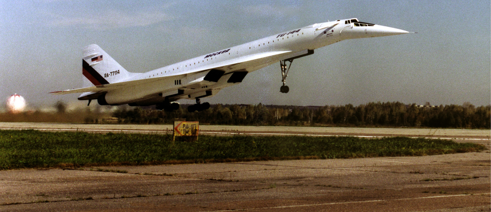

Why the Tupolev 144 failed
Commercial
1 March 2021
You've probably heard of Concorde, the widely popularized and romanticized supersonic transport jet. But did you know that the Soviet Union had one of their own? The Tupolev Tu-144 actually came before Concorde - but why did it fail?
The issues with the Tu-144 were as much technical as political. The Tu-144 was designed during the late 1960s, at the height of a fierce technology race between the USSR and the US during the Cold War. This time, however, it was a competition with Europe. The Soviets expended much energy, time, and money into the Tu-144 project, conducting research and development. They wanted to have the project completed as quickly as possible, so they kept increasing their investments in it.
The result makes you do a double-take - it looks so much like Concorde. In December of 1968, the Tu-144 had its maiden flight - two years before Concorde did. It featured retractable canard wings, an extendable nose cone, and four afterburner turbojet engines. Concorde had a remarkably similar design, with an extendable nose cone, four afterburner turbojet engines, and delta-wing configuration. It did not have retractable canards, and it could turn off its afterburners, unlike the Tu-144. When landing, the Tu-144, with insufficient braking power, needed to use parachutes to slow itself down.
A multiview drawing of the Tu-144. NASA; Public domain.
The Tu-144 got off to a rocky start. At the Paris Air Show in 1973, the airplane crashed. Whether this incident was due to pilot error or an engineering flaw, it certainly was not a good look for the aircraft, especially in its direct competition with Concorde, which was also at the same airshow.
Once it started carrying passengers in 1977, the Tu-144 was further riddled with problems. Mainly, the cabin was loud. Airplanes aren't known to be quiet machines, but it was exceptionally bad here. The passengers could not hear each other talk or shout, and resorted to passing notes for communication. The Tu-144 would not have been well-suited for long haul operations either. The always-activated afterburners, as well as the heavy weight of the aircraft made it a gas-guzzling beast that would not have gotten far without needing to refuel.
A Tupolev 144LL taking off; part of the collaborative research project between NASA and the Russians. NASA photo by Jim Ross, 1998; Public domain.
After flying just one hundred and two commercial flights, 55 with passengers, the Tu-144 was retired after a short-lived operational history amidst a political embarrassment. Concorde went on to fly until 2003.
It wasn't the end of the Tu-144 though. After the Cold War ended, the US decided they wanted to collaborate with Russia on mutually beneficial research projects, one of which involved supersonic transport. In 1998 and 1999, the collaborative project went according to plan, and researchers were able to gather valuable data regarding supersonic transport. After the program ended, the aircraft has never flown since.
References
- Dowling, Stephen. "The Soviet Union’s flawed rival to Concorde". BBC Future, 2020. https://www.bbc.com/future/article/20171018-the-soviet-unions-flawed-rival-to-concorde
- Gibbs, Yvonne. "Past Projects: TU-144LL Flying Laboratory". NASA, 2009. https://www.nasa.gov/centers/dryden/history/pastprojects/TU-144/index.html
- Prisco, Jacopo. "Concordski: What ever happened to Soviets' spectacular rival to Concorde?" CNN, 2019. https://www.cnn.com/style/article/tupolev-tu-144-concordski/index.html
- Schweikart, Larry. "Review: Soviet SST: The Techno-Politics of the Tupolev-144". Air Power History 38, no. 3 (1991): 61-62. http://www.jstor.org/stable/26272772.
- Smith, Richard K. "THE SUPERSONIC AIRLINER FIASCO: FRENZIED INTERNATIONAL AERONAUTICAL SAGA OF COMMUNICABLE OBSESSIONS, 1956-1976." Air Power History 66, no. 3 (2019): 5-20. doi:10.2307/26802349.
- "Soviet Supersonic: A Technopolitical Disaster". Studies in Intelligence 28, Winter (1984). https://www.cia.gov/readingroom/document/0000620493
- "Tupolev Tu-144". Encyclopedia Britannica. https://www.britannica.com/technology/Tupolev-Tu-144